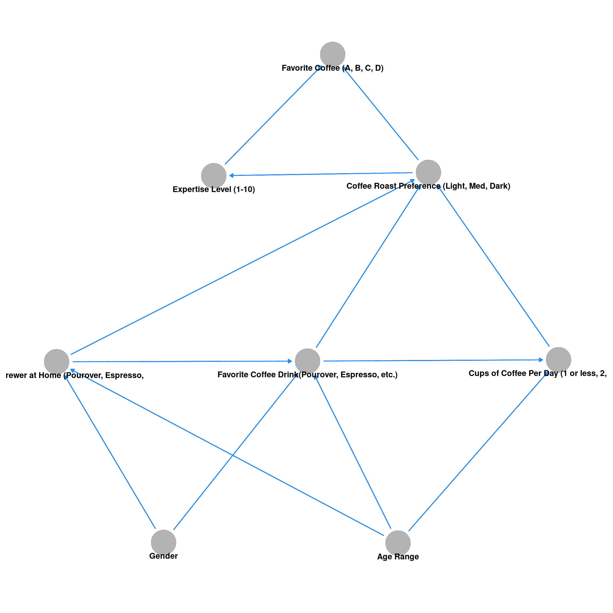

For this post, I wanted to include some additional analyses to the descriptive analyses from this video. Specifically, I thought this would be a good opportunity to create a bayesian network for inference. The data can be found here. There is no documentation, but each item is coded as the full question so it is easier to follow. This analysis is strictly to walk through using the bnlearn package for a fun dataset. Because the participants are subscribers to the James Hoffmann Youtube channel that are located in the United States, the sample could be seen as representative of James’ US subscribers.
After scanning through the data, it seems like a good amount of data are missing. I decided to then drop any columns that are missing more than half of the data. You can see the difference between the two visuals showing the amount of missing data and the number of columns included.
Below is the code for removing some questions that were Check all that apply that also had columns in the dataset that were already separated into dummy-coded variables. An example would be where_do_you_typically_drink_coffee, which was dropped because there were columns like where_do_you_typically_drink_coffee_at_home included in the dataset. I also renamed all of the columns to names that were easy to follow and not as long.
Finally, I decided to drop rows with NA from logical type columns. Once cleaning was done, the variables I was interested in had little to no missing data.
The target variable of interest was participants’ favorite coffee out of the four samples that were provided in their testing kits. As stated in the linked video, Coffee D was the chosen as participants’ favorite coffee more than the other three options.
This next visual shows the preference for each of the four coffees based on age brackets. We can see that the number of participants that rated coffee D as a 5 is highest for the 26-34 age bracket. Some basic descriptive statistics are provided in the following table. Tables can be filtered by typing in values in the box under the variable name. You can also click on the variable name and it will sort the values. Clicking the value again will sort in the opposite direction.
Code
coffee_drop |>select( age,matches("personal_pref" ) ) |>pivot_longer(-age ) |>group_by( age, name ) |>count( value ) |>mutate(value =as.factor(value),age =as.factor(age),age =fct_relevel( age,"<18 years old","18-24 years old","25-34 years old","35-44 years old","45-54 years old","55-64 years old",">65 years old" ),name =case_when( name =="coffee_a_personal_preference"~"Coffee A Preference", name =="coffee_b_personal_preference"~"Coffee B Preference", name =="coffee_c_personal_preference"~"Coffee C Preference", name =="coffee_d_personal_preference"~"Coffee D Preference" ) ) |>drop_na() |>ggplot(aes( age, n ) ) +geom_col(position =position_dodge(),aes(fill = value ) ) +facet_wrap(~name ) + viridis::scale_fill_viridis(discrete =TRUE ) +labs(x ="",y ="Counts",fill ="Rating" ) +theme(legend.position ="top",strip.background =element_rect(fill ="white" ),strip.text =element_text(color ="black" ),axis.text.x =element_text(angle =45,vjust =0.5 ) ) +NULL
When looking at the coffee preferences of different genders, males rated coffees A and D highly. It seems visually that Coffees A, B, and C are higher rated than than Coffee D. The other genders did not have a lot of data, so I also decided to get some basic descriptive statistics for each group. You can look further into the data by filtering by name (A, B, C, D) and by gender.
Code
coffee_drop |>select( gender,matches("personal_pref" ) ) |>pivot_longer(-gender ) |>group_by( gender, name ) |>count( value ) |>mutate(value =as.factor(value),gender =as.factor(gender),name =as.factor(name),gender =fct_relevel( gender,"Male","Female","Non-binary","Other (please specify)","Prefer not to say" ),name =case_when( name =="coffee_a_personal_preference"~"Coffee A Preference", name =="coffee_b_personal_preference"~"Coffee B Preference", name =="coffee_c_personal_preference"~"Coffee C Preference", name =="coffee_d_personal_preference"~"Coffee D Preference" ) ) |>drop_na() |>ggplot(aes( gender, n ) ) +geom_col(position =position_dodge(),aes(fill = value ) ) +facet_wrap(~name ) + viridis::scale_fill_viridis(discrete =TRUE ) +labs(x ="",y ="Counts",fill ="Rating" ) +theme(legend.position ="top",strip.background =element_rect(fill ="white" ),strip.text =element_text(color ="black" ) ) +NULL
Code
coffee_drop |>select( gender,matches("personal_pref" ) ) |>pivot_longer(-gender ) |>group_by( gender, name ) |>summarize(across( value,list(mean =~mean(.x, na.rm =TRUE),median =~median(.x, na.rm =TRUE) ) ),.groups ="drop" ) |>arrange( name ) |>mutate(name =case_when( name =="coffee_a_personal_preference"~"Coffee A Preference", name =="coffee_b_personal_preference"~"Coffee B Preference", name =="coffee_c_personal_preference"~"Coffee C Preference", name =="coffee_d_personal_preference"~"Coffee D Preference" ) ) |>reactable(filterable =TRUE,searchable =TRUE )
In addition to the table, I also included a plot for participants that identified as Non-binary, Other, or preferred not to say.
Code
coffee_drop |>select( gender,matches("personal_pref" ) ) |>pivot_longer(-gender ) |>group_by( gender, name ) |>count( value ) |>mutate(value =as.factor(value),gender =as.factor(gender),name =as.factor(name),gender =fct_relevel( gender,"Male","Female","Non-binary","Other (please specify)","Prefer not to say" ),name =case_when( name =="coffee_a_personal_preference"~"Coffee A Preference", name =="coffee_b_personal_preference"~"Coffee B Preference", name =="coffee_c_personal_preference"~"Coffee C Preference", name =="coffee_d_personal_preference"~"Coffee D Preference" ) ) |>drop_na() |>filter(!gender %in%c("Male", "Female") ) |>ggplot(aes( gender, n ) ) +geom_col(position =position_dodge(),aes(fill = value ) ) +facet_wrap(~name ) + viridis::scale_fill_viridis(discrete =TRUE ) +labs(x ="",y ="Counts",fill ="Rating" ) +theme(legend.position ="top",strip.background =element_rect(fill ="white" ),strip.text =element_text(color ="black" ) ) +NULL
Coffee Preference by Expertise
This visual is similar to that from the video. I just included some colors to make the coffee preferences stand out a little more.
Now for the Bayesian Networkmodel. The code below shows the relationships that were modeled. These relationships were somewhat based on the video’s content and what I thought would make sense to see what participants’ favorite coffee was. While there are better methods for choosing the relationships modeled, this is a fun analysis for some fun data so I kept it simple.
Code
model_dag <-dagitty('dag {"Age Range" [pos="-0.853,-0.673"]"Coffee Roast Preference (Light, Med, Dark)" [pos="-0.807,-0.117"]"Cups of Coffee Per Day (1 or less, 2, 3 or more)" [pos="-0.610,-0.398"]"Expertise Level (1-10)" [pos="-1.132,-0.122"]"Favorite Coffee (A, B, C, D)" [outcome,pos="-0.952,0.060"]"Favorite Coffee Drink(Pourover, Espresso, etc.)" [pos="-0.990,-0.400"]"Type of Brewer at Home (Pourover, Espresso," [pos="-1.370,-0.401"]Gender [pos="-1.208,-0.672"]"Age Range" -> "Cups of Coffee Per Day (1 or less, 2, 3 or more)""Age Range" -> "Favorite Coffee Drink(Pourover, Espresso, etc.)""Age Range" -> "Type of Brewer at Home (Pourover, Espresso,""Coffee Roast Preference (Light, Med, Dark)" -> "Expertise Level (1-10)""Coffee Roast Preference (Light, Med, Dark)" -> "Favorite Coffee (A, B, C, D)""Cups of Coffee Per Day (1 or less, 2, 3 or more)" -> "Coffee Roast Preference (Light, Med, Dark)""Expertise Level (1-10)" -> "Favorite Coffee (A, B, C, D)""Favorite Coffee Drink(Pourover, Espresso, etc.)" -> "Coffee Roast Preference (Light, Med, Dark)""Favorite Coffee Drink(Pourover, Espresso, etc.)" -> "Cups of Coffee Per Day (1 or less, 2, 3 or more)""Type of Brewer at Home (Pourover, Espresso," -> "Coffee Roast Preference (Light, Med, Dark)""Type of Brewer at Home (Pourover, Espresso," -> "Favorite Coffee Drink(Pourover, Espresso, etc.)"Gender -> "Favorite Coffee Drink(Pourover, Espresso, etc.)"Gender -> "Type of Brewer at Home (Pourover, Espresso,"}')ggdag(model_dag) +geom_dag_point(color ="gray70" ) +geom_dag_edges(edge_color ="dodgerblue" ) +geom_dag_text(color ="black",nudge_y =-.02 ) +theme_dag()

Variables Chosen For Modeling & Dropping NAs
Below is a loop of the variables chosen for the model that was visualized above. To keep things simple I dropped NA values and wanted to see quick distributions of each variable’s levels.
Below are the conditional probabilities for cups of coffee per day based on genders and age ranges.
Code
dag_fit$cup_per_day$prob |>as_tibble() |>mutate(n =round(n, 2) ) |>gg_func(x = cup_per_day, y = n, fill = gender, facet = age) +labs(title ="Probability of Cups of Coffee Per Day From the Great American Tasting",subtitle ="Based on Gender and Age Range",x ="",y ="Probability",fill ="" ) +theme(legend.position ="bottom" )
For all of the following home brewing probability tables, the visuals will be based on genders and age ranges.
Code
dag_fit$home_brew_pour_over$prob |>as_tibble() |>mutate(n =round(n, 2) ) |>gg_func(x = gender, y = n, fill = home_brew_pour_over, facet = age) +labs(title ="Probability of Making Pourover at Home From the Great American Tasting",subtitle ="Based on Gender and Age Range",x ="",y ="Probability",fill ="" ) +theme(legend.position ="bottom" )
dag_fit$home_brew_french_press$prob |>as_tibble() |>mutate(n =round(n, 2) ) |>gg_func(x = gender, y = n, fill = home_brew_french_press, facet = age) +labs(title ="Probability of Making French Press at Home From the Great American Tasting",subtitle ="Based on Gender and Age Range",x ="",y ="Probability",fill ="" ) +theme(legend.position ="bottom" )
dag_fit$home_brew_espresso$prob |>as_tibble() |>mutate(n =round(n, 2) ) |>gg_func(x = gender, y = n, fill = home_brew_espresso, facet = age) +labs(title ="Probability of Making Espresso at Home From the Great American Tasting",subtitle ="Based on Gender and Age Range",x ="",y ="Probability",fill ="" ) +theme(legend.position ="bottom" )
dag_fit$home_brew_mr_coffee$prob |>as_tibble() |>mutate(n =round(n, 2) ) |>gg_func(x = gender, y = n, fill = home_brew_mr_coffee, facet = age) +labs(title ="Probability of Making Coffee Using a Coffee Brewing Machine at Home From the Great American Tasting",subtitle ="Based on Gender and Age Range",x ="",y ="Probability",fill ="" ) +theme(legend.position ="bottom" )
dag_fit$home_brew_pods$prob |>as_tibble() |>mutate(n =round(n, 2) ) |>gg_func(x = gender, y = n, fill = home_brew_pods, facet = age) +labs(title ="Probability of Making Coffee Using Pods at Home From the Great American Tasting",subtitle ="Based on Gender and Age Range",x ="",y ="Probability",fill ="" ) +theme(legend.position ="bottom" )
dag_fit$home_brew_instant$prob |>as_tibble() |>mutate(n =round(n, 2) ) |>gg_func(x = gender, y = n, fill = home_brew_instant, facet = age) +labs(title ="Probability of Making Instant Coffee at Home From the Great American Tasting",subtitle ="Based on Gender and Age Range",x ="",y ="Probability",fill ="" ) +theme(legend.position ="bottom" )
dag_fit$home_brew_bean2cup$prob |>as_tibble() |>mutate(n =round(n, 2) ) |>gg_func(x = gender, y = n, fill = home_brew_bean2cup, facet = age) +labs(title ="Probability of Making Coffee Using a Bean 2 Cup Machine at Home From the Great American Tasting",subtitle ="Based on Gender and Age Range",x ="",y ="Probability",fill ="" ) +theme(legend.position ="bottom" )
dag_fit$home_brew_cold_brew$prob |>as_tibble() |>mutate(n =round(n, 2) ) |>gg_func(x = gender, y = n, fill = home_brew_cold_brew, facet = age) +labs(title ="Probability of Making Cold Brew at Home From the Great American Tasting",subtitle ="Based on Gender and Age Range",x ="",y ="Probability",fill ="" ) +theme(legend.position ="bottom" )
dag_fit$home_brew_cometeer$prob |>as_tibble() |>mutate(n =round(n, 2) ) |>gg_func(x = gender, y = n, fill = home_brew_cometeer, facet = age) +labs(title ="Probability of Making Cometeer Coffees at Home From the Great American Tasting",subtitle ="Based on Gender and Age Range",x ="",y ="Probability",fill ="" ) +theme(legend.position ="bottom" )
dag_fit$home_brew_other$prob |>as_tibble() |>mutate(n =round(n, 2) ) |>gg_func(x = gender, y = n, fill = home_brew_other, facet = age) +labs(title ="Probability of Making Coffee From Other Methods at Home From the Great American Tasting",subtitle ="Based on Gender and Age Range",x ="",y ="Probability",fill ="" ) +theme(legend.position ="bottom" )
These probabilities are for participants’ favorite coffee drinks based on their genders and age ranges.
Code
dag_fit$favorite_coffee_drink$prob |>as_tibble() |>mutate(n =round(n, 2) ) |>gg_func(x = favorite_coffee_drink,y = n,fill = gender,facet = age ) +labs(title ="Probability of Favorite Coffee Drinks From the Great American Tasting",subtitle ="Based on Gender and Age Range",x ="",y ="Probability",fill ="" ) +theme(legend.position ="bottom" )
The CPT here only include the probabilities for whether participants used one home brewer or not and considered all of the other home brewers as not using those at home. If I included all of them, these tables would be unbearably long. This post is already pretty long.
Code
roast_pref_func(dag_table = dag_fit$roast_preference$prob[1:3, 1:3, 1:2, 1, 1, 1, 1, 1, 1, 1, 1, 1, 1:8],x = cup_per_day,y = n,fill = roast_preference,facet_x = favorite_coffee_drink,facet_y = home_brew_pour_over) +labs(title ="Probability of Coffee Roast Preference From the Great American Tasting",subtitle ="Based on Gender, Age, Cups Per Day, and Whether Participants Brew at Home Using a Pourover",x ="",y ="Probability",fill ="" ) +theme(legend.position ="bottom" )
roast_pref_func(dag_table = dag_fit$roast_preference$prob[1:3, 1:3, 1, 1:2, 1, 1, 1, 1, 1, 1, 1, 1, 1:8],x = cup_per_day,y = n,fill = roast_preference,facet_x = favorite_coffee_drink,facet_y = home_brew_french_press) +labs(title ="Probability of Coffee Roast Preference From the Great American Tasting",subtitle ="Based on Gender, Age, Cups Per Day, and Whether Participants Brew at Home Using a French Press",x ="",y ="Probability",fill ="" ) +theme(legend.position ="bottom" )
roast_pref_func(dag_table = dag_fit$roast_preference$prob[1:3, 1:3, 1, 1, 1, 1:2, 1, 1, 1, 1, 1, 1, 1:8],x = cup_per_day,y = n,fill = roast_preference,facet_x = favorite_coffee_drink,facet_y = home_brew_mr_coffee) +labs(title ="Probability of Coffee Roast Preference From the Great American Tasting",subtitle ="Based on Gender, Age, Cups Per Day, and Whether Participants Brew at Home Using a Coffee Machine",x ="",y ="Probability",fill ="" ) +theme(legend.position ="bottom" )
roast_pref_func(dag_table = dag_fit$roast_preference$prob[1:3, 1:3, 1, 1, 1, 1, 1, 1, 1:2, 1, 1, 1, 1:8],x = cup_per_day,y = n,fill = roast_preference,facet_x = favorite_coffee_drink,facet_y = home_brew_bean2cup) +labs(title ="Probability of Coffee Roast Preference From the Great American Tasting",subtitle ="Based on Gender, Age, Cups Per Day, and Whether Participants Brew at Home Using a Bean 2 Cup Machine",x ="",y ="Probability",fill ="" ) +theme(legend.position ="bottom" )
roast_pref_func(dag_table = dag_fit$roast_preference$prob[1:3, 1:3, 1, 1, 1, 1, 1, 1, 1, 1, 1, 1:2, 1:8],x = cup_per_day,y = n,fill = roast_preference,facet_x = favorite_coffee_drink,facet_y = home_brew_other) +labs(title ="Probability of Coffee Roast Preference From the Great American Tasting",subtitle ="Based on Gender, Age, Cups Per Day, and Whether Participants Brew at Home Using an Other Method",x ="",y ="Probability",fill ="" ) +theme(legend.position ="bottom" )
Here are the probabilities of expertise level based on coffee roast preference. Explanations are hard to be made for this because the probabilities do not differ by much based on roast level.
Code
expertise_tbl <- dag_fit$expertise$prob |>as_tibble() |>mutate(roast_preference =str_to_title(roast_preference),across(-n,~as.factor(.x) ),expertise =fct_relevel( expertise,"1","2","3","4","5","6","7","8","9","10" ),roast_preference =fct_relevel( roast_preference,"Light","Medium","Dark" ) ) expertise_tbl |>ggplot(aes( roast_preference, n ) ) +geom_col(aes(fill = expertise ),position =position_dodge() ) +geom_text(data = expertise_tbl |>filter(roast_preference =="Light"),aes(label = expertise,group = expertise,color = expertise ),position =position_dodge(width = .9),vjust =-.5 ) +labs(title ="Probability of Self-Defined Expertise Level From The Great American Tasting",subtitle ="Based on Coffee Roast Preference",x ="",y ="Probability",caption ="Note: Probabilities range from 0 to 1. The scale is reduced to visually compare groups." ) + viridis::scale_color_viridis(discrete =TRUE ) + viridis::scale_fill_viridis(discrete =TRUE ) +scale_x_discrete(expand =c(0, .5) ) +theme(legend.position ="none",axis.text =element_text(color ="black" ),axis.title =element_text(color ="black" ),plot.title =element_text(color ="black" ),plot.subtitle =element_text(color ="black" ),plot.caption =element_text(color ="black" ) )
There are a lot of probabilities for participants’ favorite coffee based on their self-defined expertise level and coffee roast preference. It may be easier to follow along with the table rather than the visual.
With a reasonable amount of time in the video being spent on male and female differences in preference for coffees A and D, I decided to include some calculations for probabilities for an event with evidence in the model. It is interesting that both males and females has the same probability of preferring coffee A, while males were more likely to prefer coffee D. When the query was whether a participant preferred either coffee A or D, males once again were more likely to enjoy either of the two coffees.
Probabilities of Coffee A or Coffee D Based on Expertise Level
The final queries I created were the probability of preferring coffee A or D based on the 10 self-defined expertise levels. These probabilities were extremely interesting because the upper expertise levels were the participants that were more likely to prefer coffees A or D. I’m sure there are additional analyses that could be done with this data, but I think this is where I’ll stop. I’m sure including more evidence from the model, such as how participants brew at home and their favorite coffee drinks would paint a better picture.